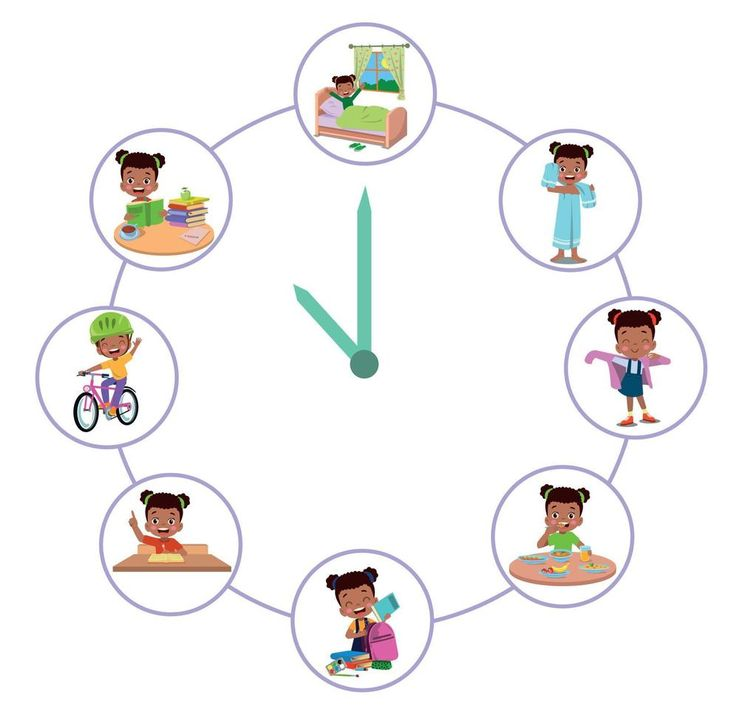
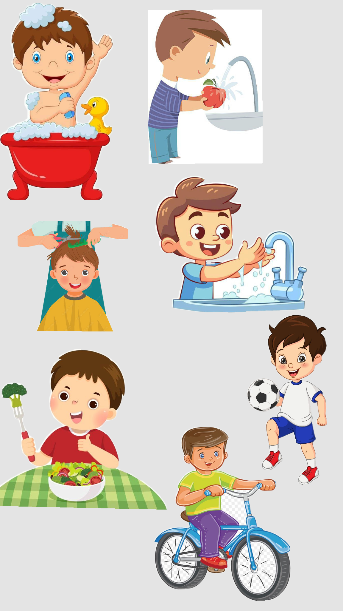
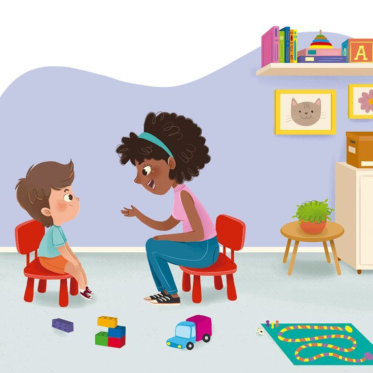

Cuidados Diários com Crianças Especiais
Introdução
Cuidar de crianças especiais exige atenção, carinho e conhecimento sobre suas necessidades específicas. Aqui estão algumas orientações práticas para o dia a dia.
Rotina
Mantenha horários regulares para alimentação, medicação e atividades. Uma rotina previsível traz segurança e conforto para a criança.
Higiene
Adapte o banho, escovação de dentes e troca de roupas conforme a necessidade da criança. Use recursos lúdicos e torne o momento leve.
Alimentação
Consulte um nutricionista para dietas especiais e garanta uma alimentação balanceada, respeitando as preferências e restrições da criança.
Estimulação
Realize atividades lúdicas e de estimulação motora e cognitiva diariamente, adaptando os estímulos à idade e ao perfil da criança.
Ambiente Seguro

Mantenha o ambiente livre de obstáculos e adapte móveis e utensílios, garantindo segurança e autonomia.
Dicas de Profissionais

Busque sempre orientação de fisioterapeutas, terapeutas ocupacionais e médicos especializados para adaptar os cuidados à realidade da criança.